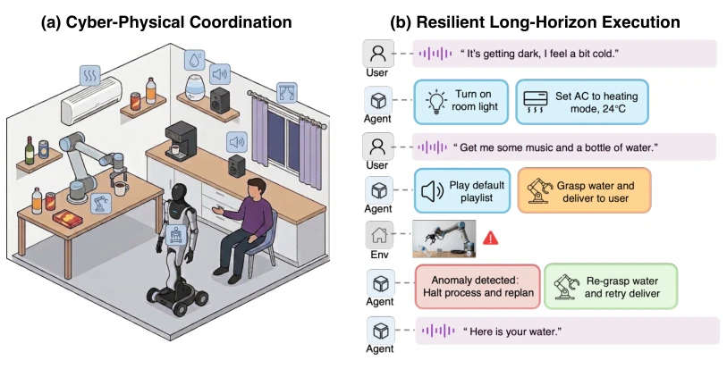
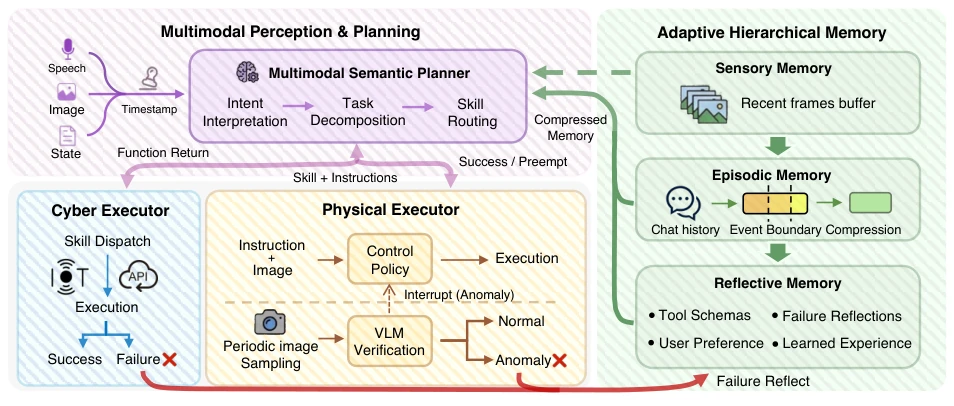
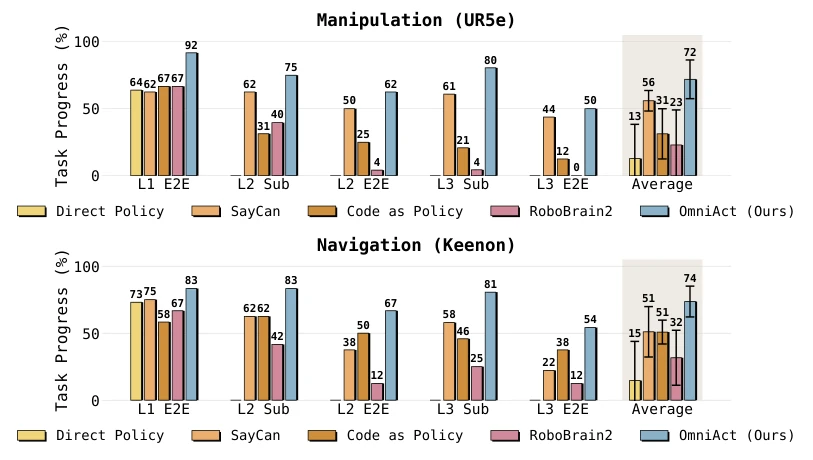
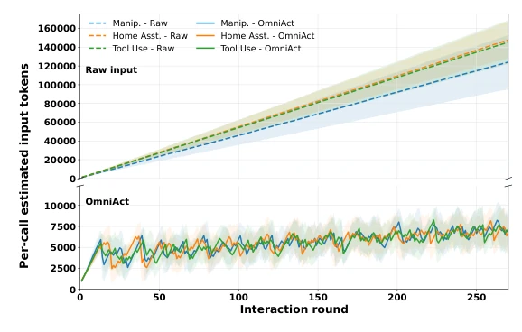
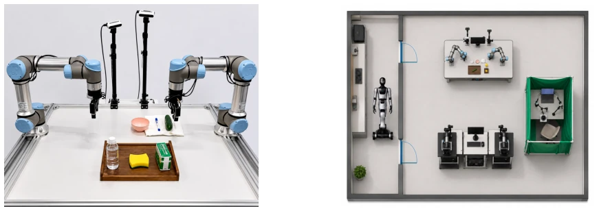

OmniAct attempts to solve the "persistence" challenge of embodied intelligence using a hierarchical asynchronous architecture, which is far more pragmatic than simply stacking VLA models. It acknowledges the fragility of monolithic models in long-horizon tasks, instead trading off the decoupling of planning, memory, and verification for robustness. The highlight lies in the asynchronous visual pre-check mechanism, equivalent to adding a "brake pad" to open-loop VLA, preventing physical execution deviations from evolving into disasters. However, the authors also honestly admit that the high-level planner cannot optimize the frozen VLA policy at the bottom, meaning if the bottom-level grasping capability is poor, even a smart upper level cannot save it. Furthermore, visual monitoring is based on VLM inference frequency rather than control frequency, creating a safety delay window; for fragile items or human-robot collaboration scenarios, this "asynchronous" may not be "real-time" enough. Overall, this is an effective patch at the architectural level, not a revolution at the algorithmic level, but it indeed allows open-source models to reach the threshold of commercial models in long-horizon tasks, proving that structured orchestration is more feasible than simple model scaling.
The core obstacle to building persistent embodied intelligence lies in long-term autonomy within unstructured environments. Existing systems face three major pain points: first, tool calls (API/IoT) and physical operations (manipulators/navigation) are often handled separately, lacking a unified action space, making it difficult for natural language instructions to coordinate heterogeneous tools [5-7]; second, long-horizon interactions lead to linear accumulation of context, triggering semantic conflicts and memory dilution [8-11]; third, end-to-end VLA policies are inherently open-loop, unable to autonomously detect physical failures, leading to error cascades [12-16]. For example, SayCan can plan but lacks closed-loop verification [5], while RoboBrain2 unifies perception but performs poorly in cross-modal tool coordination [23]. These limitations make existing systems difficult to cope with real-world scenarios requiring long-duration, multi-modal collaboration, urgently needing an architecture that explicitly separates planning, memory, and verification to support daily physical autonomy, rather than relying on the omnipotent hallucination of a single model.

Figure 1 Two key challenges for real-world long-horizon embodied deployment. (a) A single user command may require joint orchestration of IoT devices, robotic manipulators, mobile platforms, and web APIs. (b) Over extended horizons, unexpected physical failures must be autonomously detected and recovered from without human intervention.
The OmniAct framework consists of three core modules forming a collaborative closed loop. First is the multimodal semantic planner, responsible for intent understanding, task decomposition, and skill routing, outputting structured JSON to support parallel skill calls. Second is the asynchronous visual pre-check engine, which samples visual frames at low frequency during physical execution, performs semantic-level verification via VLM (e.g., whether an object is grasped), and immediately interrupts execution and triggers replanning upon detecting anomalies, compensating for the VLA open-loop defect. Finally, adaptive hierarchical memory, including sensory, episodic, and reflective memory. Its innovation lies in a compression mechanism based on event boundaries, compressing history only at semantic nodes (e.g., subtask completion), rather than fixed time intervals, achieving sub-linear scaling of context growth. Reflective memory stores failure attribution and correction strategies, supporting cumulative adaptation. In terms of data flow, observations are input to the planner, planning results distribute to executors, execution status is fed back to memory and pre-check modules, forming a closed loop. This design avoids linear context expansion while retaining key historical semantics.

Figure 2 Overview of the OmniAct framework. The system comprises three modules: (1) Multimodal Semantic Plan- ner fuses speech, image, and state inputs for intent interpretation, task decomposition, and skill routing; (2) Closed-Loop Execution Engine with asynchronous visual preemption that periodically verifies physical progress via a VLM and trig- gers interruption upon anomaly; and (3) Adaptive Hierarchical Memory (sensory, episodic, reflective) employing event- boundary compression for bounded context growth and storing failure reflections for cumulative adaptation.
Evaluated on 40 real long-horizon tasks, covering UR5e manipulators and Keenon mobile robots, involving 4 types of IoT devices. Baselines include Direct Policy, SayCan, Code as Policy, and RoboBrain2. Evaluation metrics are end-to-end success rate (E2E) and sub-task success rate (Sub). Results show that in the highest complexity L3 tasks, OmniAct's E2E success rates in manipulation and navigation reached 50.0% and 54.2% respectively, significantly outperforming baselines like SayCan. Sub-task success rates reached over 80% in L3, proving its strong anti-interference capability. Regarding token consumption, original history grew linearly over 160,000 tokens, while OmniAct maintained a stable range of 2.5k-10k. Ablation experiments show that introducing reflective memory significantly improved constraint satisfaction rates. Furthermore, the framework enables open-source models (such as Qwen3-VL-30B) to approach proprietary model performance, verifying the value of architectural design and proving that structured orchestration is more feasible than simple model scaling.

Figure 3 End-to-end and sub-task success rates (%) on long-horizon cyber-physical tasks across three complexity levels. Performance is evaluated on two structurally distinct real-world platforms: a UR5e manipulator (top) and a Keenon mo- bile robot (bottom). While baseline methods exhibit severe performance degradation as cross-modal coordination depth increases from L1 to L3, OmniAct demonstrates a significantly more graceful decline, substantially outperforming prior approaches on both partial progress (Sub) and strict task completion (E2E). Error bars in the rightmost column denote standard deviation. Empty bars indicate that the baseline lacks the architectural capability for that specific complexity level; these are counted as zero when computing the overall average.

Figure 4 Per-call estimated input tokens over 270 interaction rounds across three scenarios. Top: raw history concatenation grows linearly, exceeding 160k tokens. Bottom: OmniAct’s hierarchical memory re- mains bounded within 2.5k–10k tokens regardless of accumulated his- tory length.
其他图片Other Figures

Figure 5 Real-world experimental scenes used in the long-horizon cyber-physical benchmark. (a) The UR5e workspace serves as the manipulation testbed for pick-and-place over everyday objects (bottle, sponge, bowl, etc.). (b) The Keenon mobile robot navigates between semantic locations (entrance, corner area, manipulation station) and coordinates with the UR5e arm, enabling cross-platform tasks that combine navigation, IoT control, and embodied manipulation within a single execution loop.